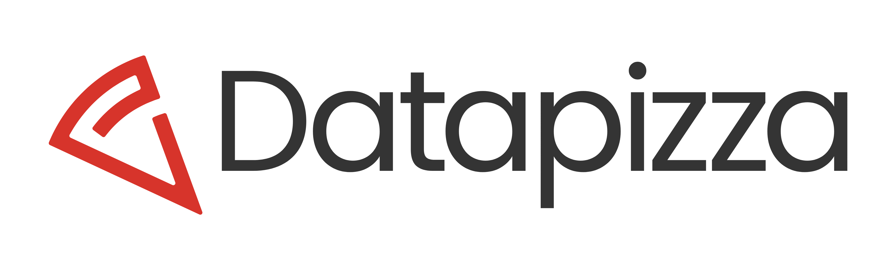

Enterprise Hackathon — ElevenLabs × Datapizza
One‑Pager Operativo • Layout a Tab
Executive Summary
- Scopo: realizzare in una giornata una demo low/no‑code basate su capability voice/AI di ElevenLabs, con fattibilità e scalabilità orientate a contesti enterprise.
- Format: team misti business/tech (decisi in fase di form iscrizione), con ideazione guidata e brainstorming di gruppo (sticky notes).
- Output atteso: 8–10 prototipi (dipende da come dividiamo i gruppi); alla fine demo + presentazione in 5 minuti davanti a tutti.
- Follow‑up: condotto da ElevenLabs (PoC, trial estesi, workshop dedicati).
- Punti aperti con ElevenLabs:
- 1) sticky notes workshop (evita che i partecipanti partano per la tangente con un’idea poco realistica),
- 2) premi (tipologia/budget),
- 2b) eventuale co‑branding dei premi.
Obiettivi & KPI
Obiettivi
- Dimostrare valore enterprise delle soluzioni voice/AI (casi d’uso reali: supporto, sales enablement, RevOps, knowledge).
- Ottenere demo funzionanti entro la fine della giornata (funzionanti = pronte per essere mostrate all’audience).
- Abilitare follow‑up concreti (PoC, pilot).
KPI suggeriti da me
- Partecipazione: 40–60 presenti, ≥80% show‑up rate vs registrati.
- Produzione: ≥ 6 demo funzionanti (spero XD); 8 demo sul palco.
- Qualità: NPS evento ≥8/10; soddisfazione giuria ≥8/10.
Target, Personas e Reclutamento
- Personas chiave: AI Lead, Head of/Director (Sales, CS, RevOps, Ops), profili tecnici senior; mix business/tech.
- Aziende: enterprise user (meno focus su vendor/reseller/SI/wrapper).
- Selezione: tramite form di iscrizione con domande su ruolo, seniority, interessi, preferenza track; assegnazione team a tavolino prima dell’evento; annuncio la mattina.
Struttura & Format dell’evento
- Durata: 14:00–21:00.
- Momenti chiave: keynote introduttivo, ideazione guidata (sticky notes), sviluppo (due sprint), selezione Top 8, demo finali, premi, closing.
- Mentorship: 2–3 mentor (noi + ElevenLabs) per supporto tecnico/di prodotto e per “gate” di fattibilità.
Agenda dettagliata (run‑of‑show)
Per rispettare lo slot 14–21 con 8/10 demo sul palco: divisione a priori ben ponderata tra profili tech e non tech. La giuria inizia a valutare i gruppi con le demo live dalle 20:00*.
*Orario variabile in base ai partecipanti. Max 5 persone per gruppo.
Pre‑apertura (staff)
Pomeriggio
- Warm‑up (5’): obiettivo team/outcome. Output: frase su sticky (“Il nostro obiettivo oggi è…”).
- Problem framing (10’): 2–3 pain statement (Sales/CS/RevOps). Esempi:
- Agente voce che capisce intento, usa RAG, risolve o apre ticket Zendesk.
- Qualifica lead incoerente: agente con BANT light che aggiorna Salesforce/HubSpot e prenota meeting (Cal.com).
- Divergenza idee (10’): brainstorming con sticky (quantità > qualità).
- Convergenza (10’): dot‑voting → 1 idea.
- Scope & success criteria (10’): definire MVP, metriche, flusso demo. Domande guida:
- Qual è il flusso minimo dimostrabile in 3’?
- Cosa deve assolutamente funzionare per convincere la giuria?
Break & networking
Serata
Team: composizione, formazione e regole
- Dimensione: 4–6 persone; mix bilanciato business/tech e linee (Sales/CS/RevOps).
- Formazione: definita in fase di selezione e screening (ruolo, seniority, track); annuncio la mattina.
- Regole:
- Solo dataset dummy/sintetici o pubblici; vietati dati reali.
- Strumenti low/no‑code affiancati a ElevenLabs (automazione, fogli, DB mock, Lovable, Cursor).
- Deadline 19:45: video 90s, set di slides, link demo.
Challenge Design
4 Challenge Card (esempi)
- Customer Support Voice Agent
- Obiettivo: ridurre i tempi di risposta gestendo FAQ, creando ticket in Zendesk/HubSpot e facendo handoff umano.
- Output demo: agente che capisce intento, risponde da KB mock via RAG, e apre ticket automatico.
- Sales Qualification & Enablement
- Obiettivo: automatizzare la qualifica lead e fornire insight post‑call.
- Output demo: agente che fa 2–3 domande BANT light, aggiorna lead su Salesforce sandbox, e produce recap con next steps.
- Knowledge Voice QA
- Obiettivo: dare risposte affidabili da policy/FAQ aziendali.
- Output demo: agente che interroga KB mock, cita la fonte usata.
- Compliance & Analytics Monitor
- Obiettivo: analizzare conversazioni per trend, sentiment e rischi di non‑compliance.
- Output demo: agente che tagga 2–3 “red flag” in sample calls e genera report sintetico.
Bonus — Wild Card Track: idea libera, purché fattibile in 1 giorno e coerente con voice/AI di ElevenLabs (multilingua, integrazioni tool, training simulato).
Criteri di Valutazione (focus sostenibilità)
- Fattibilità & Scalabilità (30%) – integrabilità, robustezza, passi verso PoC. Valutazione Datapizza
- Impatto Business (30%) – valore per Sales/CS/RevOps, metriche chiare. Valutazione ElevenLabs
- Uso tecnologia ElevenLabs (20%) – aderenza e sfruttamento intelligente. Valutazione ElevenLabs
- UX & Demo Readiness (20%) – chiarezza flusso, comprensibilità. Valutazione Datapizza
Bonus (fino a +5 pt): creatività, collaborazione, qualità pitch. Insieme
Giuria & Processo
- Composizione: 1–2 ElevenLabs, almeno 1–2 Datapizza.
- Live scoring: scorecard per ciascun criterio; timekeeping rigoroso durante tutte le fasi dell'evento, soprattutto demo.
Onboarding Tecnologico (low/no‑code)
- Accessi: account test ElevenLabs, credenziali condivise in anticipo (o attivazione veloce on‑site). Condivisione in anticipo e poi on‑site viene attivata. Oppure può aver senso avere l'accesso prima così iniziano a testarla prima.
- Starter Kit: integrazioni no‑code (workflow automazione, fogli dati, webhook semplici). Gli utenti possono usare qualsiasi strumento che preferiscono, Cursor, Lovable, automazioni, ecc.
- Supporto in sala: 1 mentor (Angelo) ElevenLabs per troubleshooting; QR. Fronte nostro non abbiamo problemi di mentors.
Dati, Privacy & Compliance
- Dati reali: vietati; usare dataset sintetici o mock.
- Consenso voce: se registrazioni vocali, informare e ottenere consenso.
- IP: il codice rimane dei team; l’uso post‑evento è oggetto di accordi separati (non in questa giornata).
- Sicurezza: nessun accesso a sistemi produttivi.
Logistica & Infrastruttura
- Spazi: sala plenaria (keynote/demo), 6–10 tavoli team, 1 stanza giuria.
- A/V: proiettore, impianto audio, 2 microfoni (mano + gelato), timer visibile.
- Energia & Rete: ciabatte per tavolo, Wi‑Fi enterprise.
- Materiali: sticky notes, pennarelli.
- Catering: soft drink & snack (aperitivo serale), acqua & caffè.
Branding & Materiali (roll‑up)
- Roll‑up: grafica fornita da ElevenLabs; valutare co‑branding (punto aperto).
- Slide master & template: coerenza visiva; QR code con agenda/criteri.
- Creazione template cobranded
Registrazione: form, selezione, conferme
Campi form (chiave)
- Nome, cognome, mail aziendale, ruolo, jobs title, seniority. company name
- Analisi preliminare: problemi riscontarti durante il lavoro quotidiano e come utilizzerebbe soluzione ElevenLabs per risolverli: preferenza challenge.
- Strumenti usati di frequente (no‑code, automazioni).
- Consenso policy dati/demo. Il loro materiale prodotto potrebbe essere condiviso in base al consenso. Possiamo usarlo sia noi che ElevenLabs
Regolamento Ufficiale
Enterprise Hackathon – ElevenLabs × Datapizza
Edizione 2025 — In presenza, fascia oraria 14:00–21:00
Scopo: giornata di lavoro pratico per creare demo low/no‑code basate sulle capability voice/AI di ElevenLabs, orientate alla fattibilità e scalabilità enterprise.
Co‑organizzazione: Datapizza S.r.l. × ElevenLabs (Datapizza cura logistica e coordinamento; ElevenLabs contenuti e tecnologia).
Target: executive e profili business‑tech (Sales, Customer Support, Product, RevOps), senza necessità di competenze tecniche avanzate.
Partecipazione: gratuita, su candidatura approvata. Capienza massima: 50 partecipanti.
Sommario
- Oggetto e Finalità
- Organizzazione, Sede e Data
- Requisiti di Partecipazione e Selezione
- Modalità di Partecipazione e Gruppi di Lavoro
- Durata e Programma di Massima (14:00–21:00)
- Tecnologie e Requisiti Tecnici
- Dati, Privacy & Compliance dei Materiali
- Proprietà Intellettuale e Utilizzo dei Materiali
- Criteri di Valutazione e Premi
- Codice di Condotta
- Privacy e Trattamento dei Dati Personali
- Responsabilità, Sicurezza e Manleva
- Modifiche al Regolamento
- Accettazione del Regolamento e Contatti
- Appendici Operative
1) Oggetto e Finalità
L’evento (Enterprise Hackathon – ElevenLabs × Datapizza, di seguito “Evento”) mira a sviluppare soluzioni pratiche basate sulla tecnologia conversazionale/voice AI di ElevenLabs, con output dimostrabili entro la giornata e potenziale di scalabilità in contesti aziendali reali.
Sono favoriti casi d’uso concreti per Sales, Customer Support, Product e RevOps.
2) Organizzazione, Sede e Data
- Co‑organizzatori: Datapizza S.r.l. e ElevenLabs.
- Sede: uffici Datapizza (Viale Sarca 222, 20126 - Milano).
- Data & orario: fascia 14:00–21:00, una giornata.
- Lingua: IT/EN.
3) Requisiti di Partecipazione e Selezione
- Partecipazione gratuita, su candidatura tramite form ufficiale.
- Target: executive e profili business‑tech (Sales, CS, Product, RevOps). Non è richiesta esperienza tecnica avanzata, ma interesse verso le applicazioni voice-AI nei processi aziendali.
- Capienza: massimo 50 partecipanti. In caso di overbooking, prevalgono ordine di arrivo, coerenza del profilo e motivazione.
4) Modalità di Partecipazione e Gruppi di Lavoro
- I partecipanti saranno suddivisi in gruppi multidisciplinari (business + tech).
- La composizione dei gruppi sarà decisa in fase di selezione e comunicata all’apertura dell’Evento.
- Ogni team è autonomo nella gestione di ruoli e strategie, con supporto dei mentor durante la giornata.
5) Durata e Programma di Massima (14:00–21:00)
Agenda indicativa:
- 14:00–14:10 — Welcome & Housekeeping
- 14:10–14:20 — Keynote ElevenLabs (vision & capability)
- 14:20–14:30 — Challenge overview & criteri (4 card + Wild Card)
- 14:30–14:45 — Annuncio gruppi & seating
- 14:45–15:30 — Ideation Workshop (sticky notes)
- 15:30–15:40 — Tech onboarding express
- 15:40–17:30 — Sprint 1 (checkpoint 16:15)
- 17:30–18:00 — Break & networking
- 18:00–19:45 — Sprint 2 (checkpoint 18:45)
- 19:45–20:00 — Preparazione demo e slides
- 20:00–20:45 — Demo Live: Top 8
- 20:45–21:00 — Awards & Closing
6) Tecnologie e Requisiti Tecnici
- Ogni partecipante deve portare laptop, caricabatterie e adattatori.
- Ammesso l’uso di strumenti low/no‑code, automazioni e API ElevenLabs.
- Vietato l’uso di librerie o contenuti in violazione di licenze o diritti di terzi.
7) Dati, Privacy & Compliance dei Materiali
- Consentito solo l’uso di dataset pubblici, sintetici o forniti.
- Vietato l’uso di dati reali o sensibili.
- In caso di registrazioni vocali, deve essere acquisito il consenso dei soggetti coinvolti.
- Gli organizzatori declinano ogni responsabilità per uso improprio dei dati.
8) Proprietà Intellettuale e Utilizzo dei Materiali
- La proprietà intellettuale di idee e prototipi rimane dei rispettivi autori/team.
- I team autorizzano Datapizza ed ElevenLabs a utilizzare immagini, video, pitch e demo prodotti per finalità promozionali o di comunicazione, con credito ai team, a titolo gratuito e senza limiti di tempo o territorio.
9) Criteri di Valutazione e Premi
Valutazione:
- Fattibilità & Scalabilità
- Impatto Business
- Uso tecnologia ElevenLabs
- UX & Demo Readiness
- Bonus: Creatività e collaborazione.
Premi:
- Premi e menzioni ai progetti più meritevoli (beni, esperienze o visibilità).
- Decisioni della giuria insindacabili.
10) Codice di Condotta
- Mantenere un comportamento rispettoso, collaborativo e professionale.
- Vietati comportamenti offensivi, discriminatori o lesivi.
- Violazioni del codice comportano l’immediato allontanamento dall’Evento.
11) Privacy e Trattamento dei Dati Personali
Titolare del trattamento: Datapizza S.r.l., P.IVA 12629020962, S.L. Via Giuseppe Ripamonti 190, Milano (MI) 20141
Dati raccolti: nome, cognome, email, ruolo, azienda, preferenze challenge.
Finalità: selezione dei partecipanti, gestione organizzativa e comunicazioni.
Conservazione: fino a 12 mesi dopo l’Evento.
Contatti privacy: info@datapizza.com.
12) Responsabilità, Sicurezza e Manleva
- Ogni partecipante è responsabile della propria attrezzatura.
- L’organizzazione non risponde di danni o smarrimenti.
- Vietato introdurre sostanze o oggetti pericolosi.
- La partecipazione implica la manleva da responsabilità salvo dolo o colpa grave.
13) Modifiche al Regolamento
Gli organizzatori possono modificare, rinviare o annullare l’Evento per motivi di forza maggiore o esigenze organizzative, con comunicazione tempestiva ai partecipanti.
14) Accettazione del Regolamento e Contatti
Con la candidatura, il partecipante dichiara di aver letto e accettato integralmente il regolamento.
Contatti organizzativi: info@datapizza.com
15) Appendici Operative
A) Deliverable minimi
- Pitch deck (max 6 slide)
- Demo funzionante (link o esecuzione live)
- Facoltativo: video 90s o 1‑pager riassuntivo
B) Linee guida ideazione
- Problem framing → Use case → Scope MVP (demo < 3 min)
- Definire 1 tool call e 1 knowledge base
- Focus su sostenibilità e scalabilità